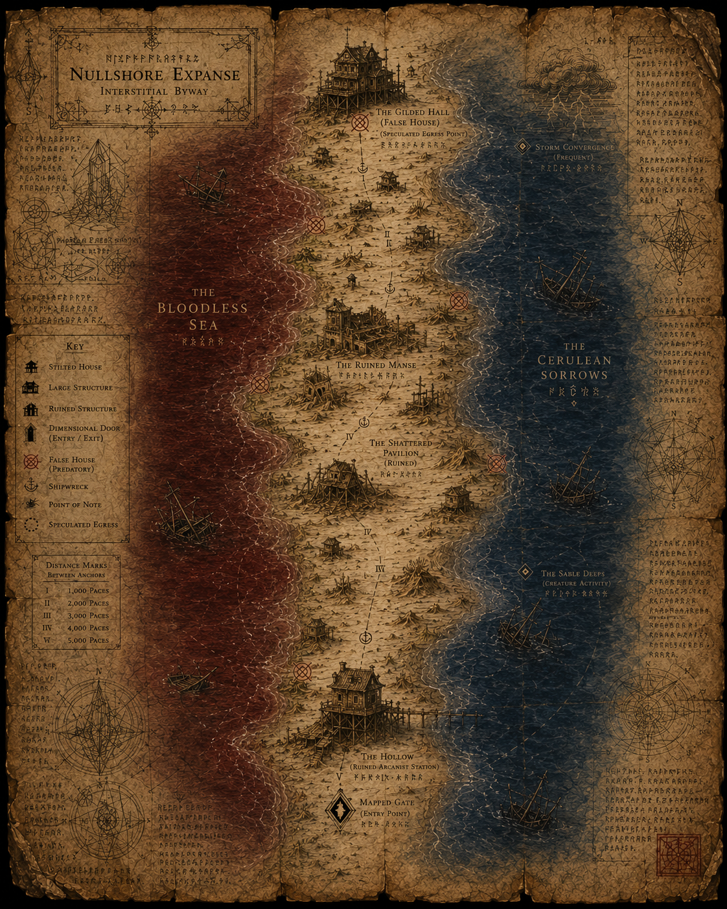

Elder Maren
Quest GiverPractical village leader who believes the forestall is weakening.
Campaign command page for pacing, prep gaps, lore continuity, D&D Beyond production, and story development.
Saved locally in this browser. Use this as a live prep desk while writing the adventure.
The forestall is not failing. It is functioning as designed while The Gilded Hall uses the absorbed arcanist's portal equipment to invert the signal and feed.
Current lore gaps to resolve before final design: storm phases, fishermen betrayal lore, and Option C setup requirements.

Practical village leader who believes the forestall is weakening.
Ritual keeper with logs showing the forestall pull has shifted inward.
First friendly face. His unconscious partner still needs a name.
A false house becoming permanent byway infrastructure.
The remaining D&D Beyond risk is the phased false house fight. Storms are DM-facing time pressure only, and thaumtec is plot color unless a specific tool becomes player-usable later.
No D&D Beyond entry is needed for the storm clock or descriptive thaumtec equipment as currently planned.
Official stat block references currently safe to use: Guard for Pol if needed, Veteran for Captain Duvesh if needed. Drawn Shades require homebrew entry.